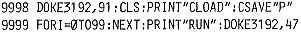

80-Bus Journal |
Jan/Feb/März 1984 · Ausgabe 1 |
Erweiterungen oder vollst. ECB-Systeme zu einem gemeinsamen Betriebssystem zu finden Red.). Im Sommer wollen wir noch einmal ein Treffen machen. Termin wird rechtzeitig bekanntgegeben. Vielleicht wird die Teilnahme etwas umfangreicher.
Zum letzten Journal:
Für Interessenten mit CLD- Hardcontroller habe ich einen Cross-Assembler (Z80 -- 6502), der in Maschinensprache geschrieben ist und sämtliche Leistungsmerkmale wie der CLD- Assembler hat. Er ist im Tauschservice zu haben.
Wofgang Mayer-Gürr, Recklinghausen
Folgende beiden Zeilen, an ein BASIC- Programm angehängt, erlauben auch in BASIC automatisches Laden und Starten eines Programms, ähnlich dem Generate- Befehl in Nassys. Zum Abspeichern auf Cassette muß zuerst im Nassys der U- Befehl gegeben werden. Im BASIC wird dann das Programm mit RUN9998 abgespeichert.
Unter Umständen kann es notwendig sein, noch die Zeile
9997 END
einzufügen.

Falls bei der Programmierung der PIO auf dem Nascom1 Schwierigkeiten auftreten, so kann es daran liegen, daß die PIO nicht richtig zurückgesetzt wird. Folgende Modifikation beseitigt das Problem:
Jörg Wittich, 771 Donaueschingen
Ich bin sehr an 80 Bus CP/M interessiert.
Der Preis ist wirklich sehr gut. Ich hätte folgenden Stufenplan als Vorschlag:
Für Stufe 2 stelle ich mir ein Disketten-Nassys vor, welches zusammen mit Emdos die Floppyverwaltung übernimmt.
Dieses könnte dann – anstatt oder zusätzlich zum Kassettenrecorder – die Programmspeicherung übernehmen. Dabei wären die Programme der Stufen 1 + 2 sowie der künftigen Nascom C-Benutzer austauschbar, sofern sie nicht auf die verschiedenen Speicher Routinen zugreifen. Der Nascom C Monitor soll ja Nassys compatibel sein.
CP/M Benutzer könnten eine Nassys – Emdos Diskette in Reserve haben, um die alten – oder auch neuen – Nassysprogramme weiter zu benutzen. Sie brauchten dann nur ihre alten Programme einmal in den Speicher zu kopieren und dann auf Diskette abspeichern.
Als zukünftige Entwicklung stelle ich mir aber CP/M, oder CP/M compatibles vor. Kein anderes Betriebssystem mit dem wir nur wieder völlig allein wären.
Da viele Leser ihr ECB System aus den verschiedensten Karten aufbauen, wie MC, Schulmeister,Elzet, oder ich z.B. Janich + Klass, brauchte jeder nur das BIOS an sein System anpassen. Damit könnten im 80 Bus-Journal weiterhin, für Jedermann nutzbare Programme veröffentlicht und vielleicht auch neue Leser gefunden werden.
Ich denke dabei z. B. an die Nachbauer des MC – CP/M doch nach Aufbau der Karten, wie ich finde, von der Zeitschrift MC ziemlich allein gelassen werden. Darüber hinaus bin ich an einer Adapterkarte 80 Bus/ECB Bus interessiert.
Eine solche Karte dürfte doch die Zustimmung vieler Leser finden, die nicht ein komplettes neues System auf bauen wollen.
Denn ein neues Netzteil, neues Gehäuse usw. ist ja auch nicht gerade billig. Vielleicht sollten Sie diese Karte im nächsten Heft etwas näher beschreiben. Wenn ausser den Steckern auch noch Bauteile auf die Karte sollen, könnte man vielleicht ein Mem.Selct und Bankselect mit den Adr. 16 – 19 generieren, um 64K bzw. 256K DRAM Speicher- Karten daran zu betreiben. Damit dürfte dieses, für alle die nicht gleich ein vollständiges ECB-System aufbauen wollen, die brauchbarste Karte sein. Denn wenn sie ihren alten Nascom einmal in die Ecke stellen, können sie die aufgebauten Karten am ECB-Bus weiterbenutzen. Ich halte auch eine Sammelbestellung der abgew. Buchsen-leisten für sehr sinnvoll, da diese sicher nicht überall erhältlich sind.
| Seite 34 von 52 |
|---|